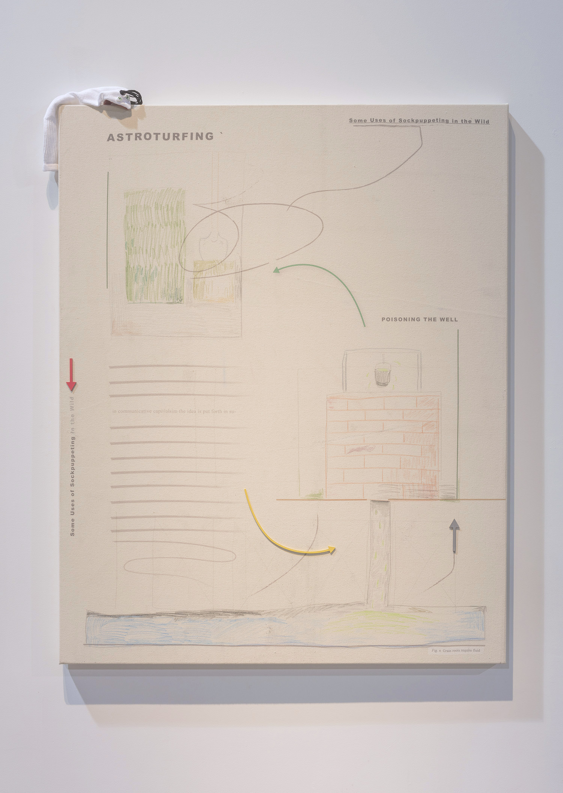
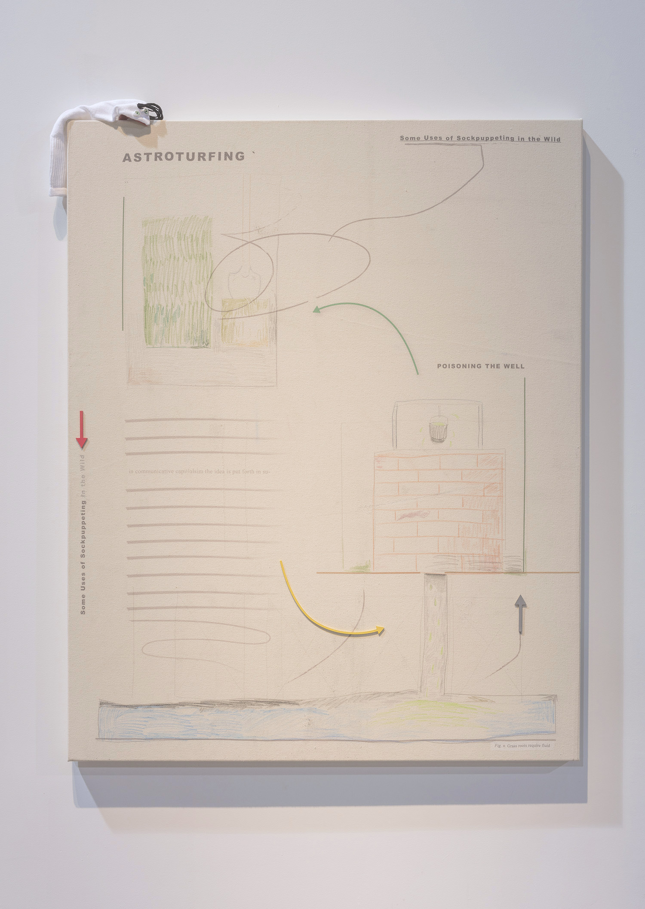

Sockpuppets
Arsenal Contemporary, Montreal, 2016
Sockpuppets are authentic-seeming online user personas created for a surreptitious purpose. This body of work was primarily a formal experiment, an attempt to render my research interests in Internet media manipulation into the vernacular of contemporary art in multiple media: sculpture, installation, video, painting, and relational aesthetics.
Central to the work are four theatre sculptures, thematically represesenting four sites of informational "influence operations": (1) the activist (hackers), (2) the state, (3) the cultural, and (4) the domestic. The conceit was to render each of these sites through the vernacular of literal sockpuppetry: turning them into puppet theatres of the sort that might be used to entertain and educate children. The activist (hacker) theatre (1) took the form of a cardboard computer box, reconstructed as a digital texture map inkjet printed on folded metal. A square of real grass turf sits in the box, providing some comfort to the puppet master as it gradually browns and dies over the course of the exhibition. The state theatre (2) is constructed from readymade cubicle divider office material, fronted by the veneer of the building housing Russia’s Internet Research Agency. The texturemap used to compose this image came from a Russian national hired by a contact to take detailed photographs of the building facade materials. This reconstructed image was then inkjet printed onto the type of plastic mesh material used to cover building edifices during construction. The cultural theatre (3) is a miniature reconstruction of The Arsenal exhibition space, built using the architectural materials used in the larger building and fronted by a cut-down panel from an actual interior white gallery wall. The domestic theatre (4) takes the form of a hand-sewn Facebook profile page, draped over an ironing board.
Various installations complement these theatres, providing additional context: a laundry line with clothes pegs holding various handmade sockpuppets each attached to usernames and passwords found in leaked documents; a cubicle separator decorated with reproductions of leaked documents from various government programs and original materials explaining how to effectively astroturf Wikipedia articles; an abstract network diagram painted on a canvas affixed to a free-standing white board support structure; etc.
The installation was surrounded by paintings formalized as pages from a hypothetical influence operations manual, a mixture of inkjet on canvas and acrylic paint depicting various manipulation techniques.
The video is a first person go-pro tutorial walking through the construction and use of an actual sock puppet, with a voice over that collapses the practice of physical sockpuppetry with the aims of online manipulators. It is projected onto a screen made from dozens of white socks sewn together by hand.
The relational aesthetics component was largely autoethnographic; a variety of sockpuppet accounts were purchased with bitcoin from various darknet sites and used to engage in social media discourse. (For instance, a seasoned wikipedia account was used to make innocuous edits to the pages of various artists (Mike Kelley, Cosima von Bonnin, etc.) who served as inspiration for the exhibition, rooted in legitimate art historical research). An additional element came in the form of the studio production underwriting the exhibition: the bulk of the exhibition production budget went towards employing young artists to churn out dozens of sockpuppets and various other aspects of the installations.
At the opening the young son of a controversial Montreal art collector delighted in crouching down in the various theatres, sockpuppets produced for the exhibition on his hands.
With production support from:
Eli Kerr,
Ben Borden,
Jean-Marc Perin,
Misca Lagasse,
Sophia Borowska,
Sophie Eddell,
Sonja Coates,
Aletha Persuad,
Will Gaucher,
Hera Chan,
Anonymous Russian photographer,
Anonymous darknet sellers,
ADDisplay,
Robocut
back
Name Last modified Size Description
Parent Directory 28-May-2025 12:17 -
Early Work (2006-2009) 28-May-2025 14:30 963k artworks

 
